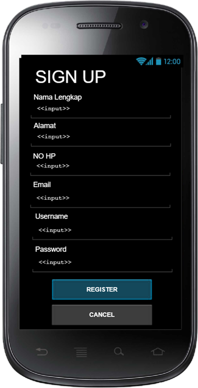
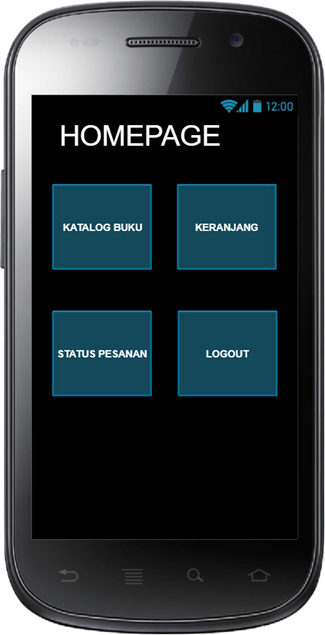
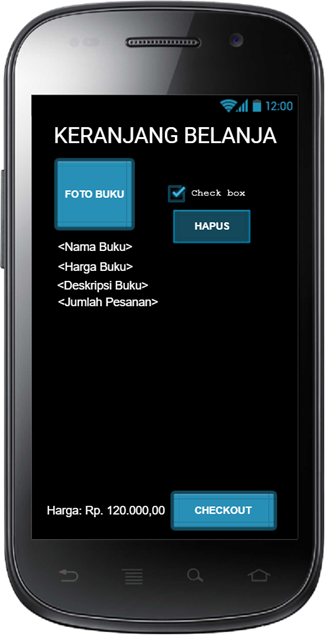
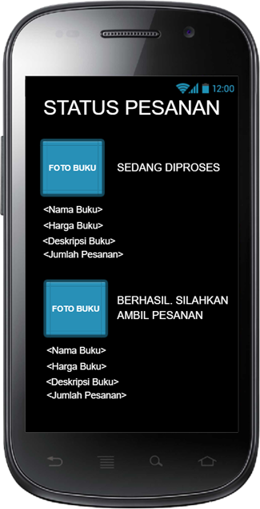
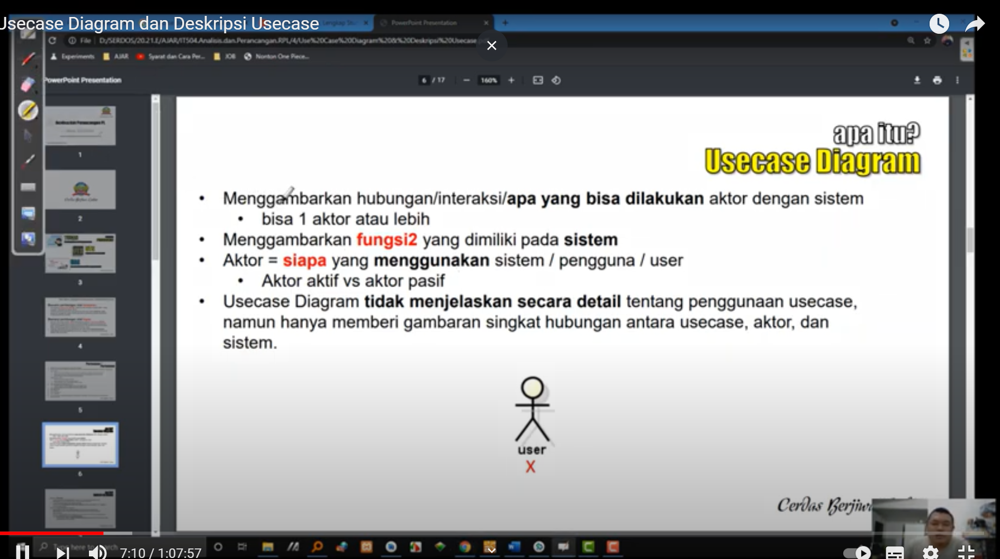
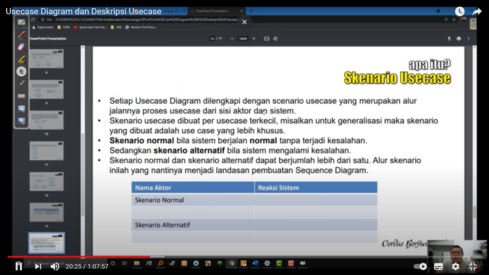

Selamat pagi Pak :)
Nama: Livren Sandi
NIM: 1811500097
Kelompok: TI6A
Hasil saya menyadur pertemuan ke 4:
- Memahami apa itu Usecase Diagram(menggambarkan apa yang dilakukan aktor dengan sistem bisa lebih dari 1 aktor
aktor aktif disebelah kiri sedangkan aktor pasif disebelah kanan)
- memahami Usecase Diagram untuk pengguna utama perangkat lunak
- memahami Usecase Diagram untuk pengguna admin perangkat lunak
- Memahami apa itu include
- Memahami apa itu extend
- Memahami apa itu Generalisasi
- Memahami apa itu deskripsi Usecase
- Membuat Usecase dan deskripsi Usecase
Hasil file project astah Download
gambar project yang saya coba membuat:
Deskripsi Usecase dalam bentuk word: Download
contoh design tampilan yang saya buat:






Screnshot materi yang diajarkan:

